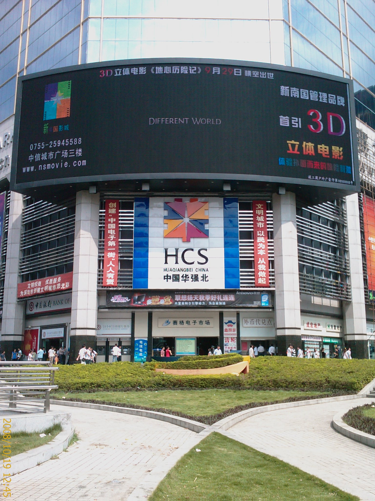

到龍華的第二個週末
19/Oct 2008

10⁄18
下班後隨便走走
晚上在某個我忘了名字的公園裡拍的
那個公園還蠻有趣的
裡面竟然有遊戲設施(還是要付費的)
也有一些露天卡拉OK
還有撞球桌跟桌球桌…=.=
公園外圍有一些賣吃的小攤販跟射汽球的攤販
感覺就像夜市一樣了嘛…Orz
10⁄19
因為其他同事都有事情
所以我就只好一個人想辦法找樂子
於是問了要怎麼到深圳市區
這是在等車的旁邊拍到的
這種東西有人會買嗎??敢用嗎??
坐了近一個小時的車之後
到了羅湖火車站

旁邊有個汽車客運站
不知道是開往哪邊的…@_@
因為只有華強北電子商廠的印象
所以就先搭地鐵到華強站
想辦法喚起一星期前的記憶
不知不覺快到中午了
隨便找家店祭祭五臟廟
吃飽後不小心看到這家店

因為三聚氫氨的關係
來大陸之後都還沒喝過奶製品
今天終於忍不住了
頂多就是腎結石嘛
很像有什麼超音波可以打掉
衝了
買一杯奶茶來嘗嘗
不過喝起來還是沒像台灣的飲料好喝
而且算起來價錢還蠻貴的
(我拿出手機拍照的時候，女店員還特地躲起來不給我拍…XD)
逛了一下電子商場
幫我的手機買個線控
這樣聽音樂就方便多了
準備搭地鐵走了
留張照片紀念一下

走過地下道後再來一張
(其實是走錯路….)

因為還不確定要怎麼搭車回龍華
早上有在火車站附近看了一下
好像沒看到買票回龍華的地方
所以就早一點搭地鐵回到火車站
順便在附近多逛逛也好
在地下一樓看到這個感覺還蠻不錯的
就上來廣場拍照留念
用這種流動的水當天花板
感覺空調的費用應該可以省下不少
而且採光還很棒
只不過好像沒看過用這個當屋頂的房子…@_@
又逛了一圈
還是找不到買票的地方
只好打電話求救
原來是在下車的地方直接上車就可以買票了…=.=
結果根本就沒有專門賣票的地方
害我找了好久…@_@

這兩張照片是車內的設備
看起來像扶手的東西其實可以變成椅子
這個構想還不錯
增加載客率，節省空間
其實早上搭車來的時候就有用到了
那時候是客滿的狀態
所以就不好拍了
不知道為什麼
感覺有點累
車開了之後沒多久就睡著了
還好快到的時候有突然醒來
因為車子的終點不是我的目的地
要是睡死了就要準備再花大錢搭 Taxi 回去了…Orz
回到家後沒多久
有同事就找我去按摩了
我想說閒閒沒事就跟了
這次的地方跟上次不一樣
整間屋子都充斥著一種不知名的香味
我上次是按泰式的
所以這次就挑日式的試看看
有用精油推背
推背感覺就是把精油塗在背上
然後用手把整個背部搓的熱熱的
之後再用熱毛巾擦一擦
沒什麼特別舒服的感覺
在按摩脖子的時候
她還跟我說我的脖子有很多什麼東西
(她說了一個名詞，可惜我聽不懂…@_@)
大概是我常常坐在電腦前所以脖子受不了
沒想到按摩脖子還能看出一些東西啊….
真是佩服佩服!!
這次的按摩小姐在相貌上比上次的差一些
不過感覺比較認真一點
所以整體感覺比上次的要好一點
可是還是沒有通體舒暢的感覺啊…@_@